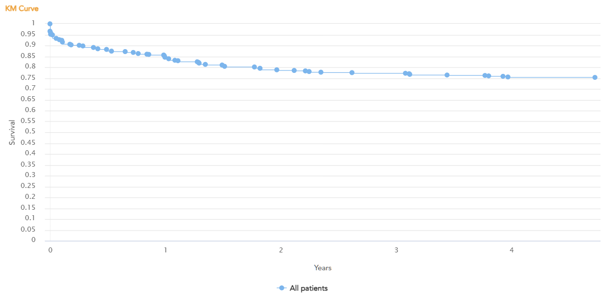

Ver. 2.5
PROCEDURE TRACKING
Dashboard
Analytics
Mortality
Major Complications
Cost Analysis
Patient
Admin
Procedure Type
Transcatheter Aortic Valve Implantation
Select Valve
CoreValve
Evolut R
Evolut Pro
Evolut Pro+
Evolut Fx
Sapien
Sapien XT
Sapien 3
Sapien 3U
Sapien X4
Lotus
Acurate Neo
Acurate Neo2
Navitor
Jena
Hydra
OPTIONS
OFF
Search
Refresh
KM Curve
Survival Stats
LVEF
AMG
AVA
Paravalvular
Test 1
Test 2
204 Procedures completed

Active Filters
Group 1
AF: Yes
Previous Cardiac Surgery : Yes
Group 2
LVEF: Yes
AF
Yes
No
N/A
Porcelain Aorta
${label}
N/A
Previous Cardiac Surgery
Yes
No
N/A
MEAN AORTIC VALVE GRADIENT
<40
>40
N/A
STS SCORE
<3
>3
N/A
EURO SCORE II
<3
>3
N/A
LVEF
< 30
30-50
> 50
N/A
eGFR
< 30
30-60
> 60
N/A
ANNULUS-SIZE
< 21
21-26
26-29
> 29
N/A
LVOT CALCIUM
None
Mild
Moderate
Severe
N/A
FRAILITY
Severe
No frailty
Moderate
Mild
N/A
PRE EXISTING AR
None
N/A
PRE EXISTING MR
None
N/A